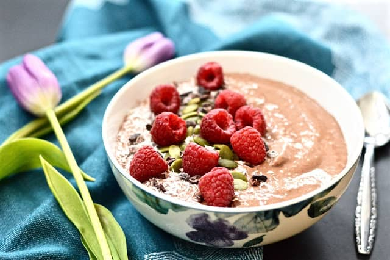

Chocolate Raspberry Smoothie Bowl

You could never go wrong with a smoothie dessert
This chocolate raspberry smoothie owl is a delicious,thick smoothie bowl that is packed full of healthy ingredients.
Made with Bananas,raspberries,cocoa powder ,avocado and coconut milk its a healthy breakfast or snack that is just ready in a few minutes.
Its a naturally dairy free,vegan and paleo too!! dish
INGREDIENTS
- 2 frozen Bananas
- 1 ripe avocado, peeled
- 125 g (4 1/2 oz/1 cup) raspberries
- 2 tablespoons raw cacao powder
- 1 teaspoon vanilla powder
- 130g (4 1/2 oz/ 1/2 cup) sheeps milk yoghurt or Coconut yoghurt
- 125 ml (4 fl oz/ 1/2cup) almond milk or any milk of your choice
- To top (your choice): edible flowers,passionfruit,lilly pilly berries,almonds,pepitas,chia seeds,coconut flakes,cacao nibs,granola and/or nut butter
STEPS FOR PREPARATION
- Place all the ingredients in your high speed blender or food processor
- Blend well until smooth
- Transfer the smoothie to a bowl and add any optional toppings
- Serve and enjoy!